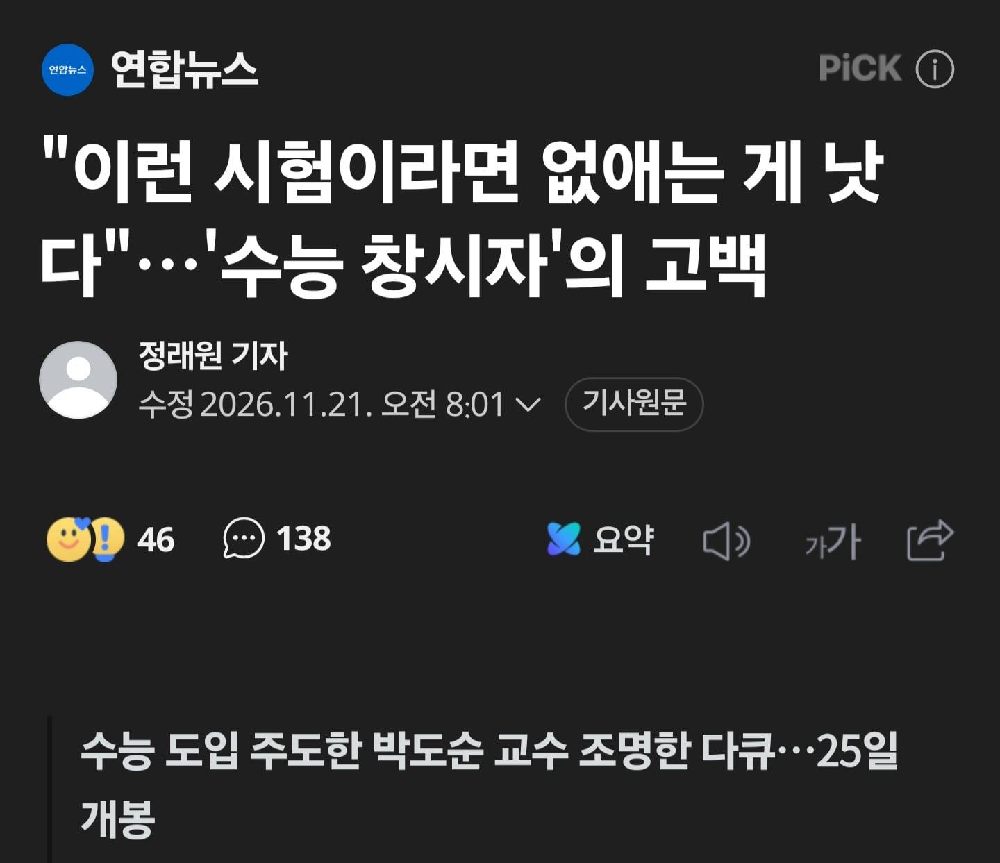
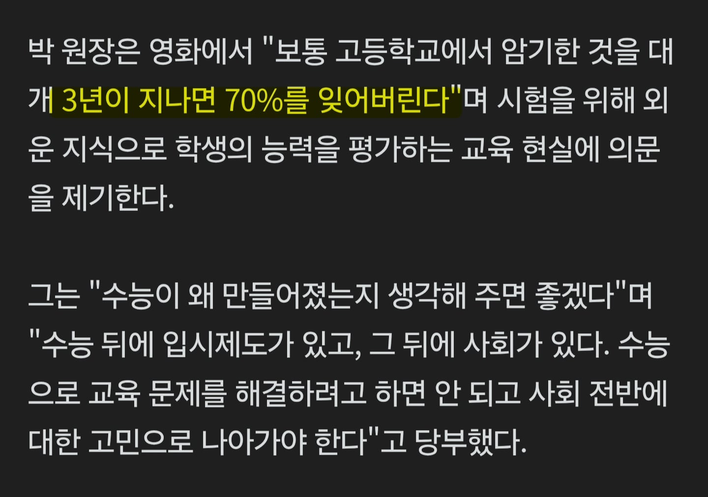

https://n.news.naver.com/article/001/0016455515?sid=103


암기능력으로 학생을 평가한다는 현실이 의문이라고 함
https://n.news.naver.com/article/001/0016455515?sid=103


암기능력으로 학생을 평가한다는 현실이 의문이라고 함
과거 본고사 시절로 돌아가면안되나
무지성암기로는 수능 고득점은 불가능인디..
중급닌자 시험이지 뭐 ㅋㅋ
눈깔 유전자가 없는거뿐
수시특) 수능보다 더한 암기능력임ㅋㅋ 공정하지도못함
??: 수능 만든 사람이 수능에 대해 뭘 알아!
그냥 본고사 부활시켜
뭐이제와서 ㅋㅋ 다알고 있던건데
수능이 암기시험이라고?
오히려 퍼즐푸는 시험 아닌가
과탐 도표나 수학문제나 국어 문제들 암기로 어케 푸노!!!
과거시험 ㄱㄱ
카타카로 가면 모두가 납득할 수 있을까?
내신이나 이런거에 비해서 그나마 수능이 끝까지 공정성 조금이라도 가져갈 수 있는 시험인거 아님?? 학교 내신시험 수행평가 본고사 이런것들을 어떻게 감시하라고...?? 오히려 반대로 주장해야하는거 아닌가
나도 수시로 대학갔다만
수시는 그냥 암기빨임
교사들 시중 문제집에서 비슷한 문제 그대로 내고 수업 중에 어디 문제 나온다고 알려주기까지 하는데
저게 문제라면 수시는 더한 문제인 것임 ㅋㅋ
ㅇㅈ 수시는 솔직히 암기빨임
나는 그냥 시험보기 2주전부터 프린트같은거만 수십번봤는데
어지간하면 80은 그냥 나오더라
유독 암기력이 부각되는 시험이라 해도 이해력과 암기의 효율을 높이는 연상 능력 등도 뒷받침 되어야 함
게다가 수능은 학기 중 보는 시험과 다르게 단순 벼락치기 암기로 가능한 수준도 아니고
적당한 이해력에 많은 노력이 합쳐진 결과물이기 때문에.
수능 등급 순으로 줄세우면 지능, 노력의 비중이 조금 다르더라도
결국 사회에서 필요로 하는 우수한 학생 순으로 얼추 맞아 떨어짐
다만, 수능의 의미가 점차 퇴색되는 것은 이번 AI 치팅 뿐만 아니라,
정보력과 문제 풀이 스킬 싸움, 사교육 의존도 차이로 변질되어가고 있기 때문에 지적하는 것임
한국 사회 특성 상 '공략법' , '효율'에 미쳐 있는 나라라서
수능 시험 또한 가장 효율적인 방법으로 공략하는데, 결국 그게 사교육과 문제 풀이 스킬 의존도로 이어짐
원어민들도 난해한 영어 지문 풀이는 1분도 안되어서 밑줄 몇 개 그어서 소거법으로 쉽게 풀어버리는데,
정작 영어는 한마디도 못하는 문제 풀이 기계가 양산되는 것임
즉, 더 똑똑하고 더 노력한 사람이 독학이나 공교육만으로 문제를 풀려면 한 영역을 이해하는데 수시간에서 몇일이 걸리고
문제 풀이에서 답을 추론할 때에도 많은 집중력과 사고력을 동원해야 하지만
적당한 학업 베이스와 사교육 버프, 반복 숙달 된 스킬'만'으로 푸는 것이 가능해지면
성적만 보고 둘 중에 누가 더 얼마나 머리가 좋고, 얼마나 노력했고를 가늠하기 애매해짐
일타강사 사교육의 풀이 스킬만 흡수해서 반복적으로 빠르게 답을 찾는 걸 잘하는 데 능한 것이
과연 사회에서 필요로 하는 인재상에 부합한 학생인지는 다시 생각해볼 문제긴 한데
여지껏 사회에 깔린 대부분의 업무는 수동적으로 시키는 일을 반복적으로 잘하는 기계에 가까운 인간을 요해왔고
그 조건에 맞는 인재상들이 수능, 대학 서열(등급)으로 걸러져서 굴러간 것인데,
이제 그 영역을 AI가 어떠한 인간보다 잘 해낼것임.
그래서 메가스터디 손주은 회장도 입시 시장의 붕괴를 수년 전에 이미 예견했고
스스로 고민하고 깨닫는 사고력, 새로운 것을 만드는 창의력,
실질적인 언어 능력(외국어 포함)과 토론 능력 등이 우선 시 되는 사회로 바뀌게 되었을 때도
수능 시험이 적절한가 하면 단언컨데 아닌 세상이 올 것이고 지금은 그 과도기에 있는 듯 함
그럼 본고사 해
본고사나 대학별 시험 체제로 가는게 맞음
수능이 암기가 전부는 아니지만 기괴한 수능식 퍼즐문제 풀려고 전국 고3, n수생들이 쓸데없는데 몇년간 시간을 쳐박고 있음
이럴 시간에 대학 공부를 했으면 노벨상 몇개는 나왔겠다
경 대학별로 입학시험 다 따로시키면 되는거아님?
수능은 암기보단 두뇌 회전 능력 측정하는 시험 아닌가?
사실인지는 모르지만 90년대 초반 초창기 수능은 IQ 검사에 가깝다고 들었음. '수학능력'은 지능과 상관관계 있는 게 맞지 않음?
상관관계는있지
근데 문제 종류나 유형이 정해져있으니
연습으로 커버되지
예비고사-본고사 하다가 사교육 줄인다고 도입한게 수능 아니었나
지난 수십년간 평가방식 개편은 매번 사교육 줄이는게 목적이었지 정확한 감별이 아니었던것 같아. 정확한 감별은 '지나친 줄세우기'로 평가절하당하고 줄이겠다는 사교육 시장은 매년 성장했지. 이제와서 저출산으로 전체규모는 줄었지만 학생 1인당 부담금은 계속해서 커지고 있는게 현실임.
내가 수능 칠때도 저얘기 하셨고 계속 꾸준히 목소리 내는데 걍 묵살하는중임
수능체제에서 손해본건 앞으로 몇백년동안 갚게되겠지
글쎄 지금의 반도체 호황같은건 수능 초기 세대가 이룬 성과 아닌가? 시대가 변했으니 다른 체계가 필요하다는 의견에는 동의 하지만 출발 자체가 틀렸다고까지 하기는 섣부른것 같음.
잉태되지도 않은 애들을 애도하지 않듯이
수능에 실패한애들을 손해로 보는 인식조차 없지
니가 무슨 대안을 내놓을지는 전혀 기대도 안하지만
거기에도 실패한 사람들이 등장하게 되어있음
그리고 수능 시험은 사회 변화를 따라가게 바뀌고 있는 시험임.
저 교수가 만들었을 당시의 수능과 현재의 수능은 그냥 근본적 성격 자체가 다른 시험.
그러니까 암기능력 운운하지.
파시스트같은말을 하네
한다는 반박이 파시스트같다니
어처구니없구만
걍 깔끔하게 피셋으로가자
추첨제하고 졸업 조건을 빡세게 ㄱㄱ
수능이 뭔 암기여..